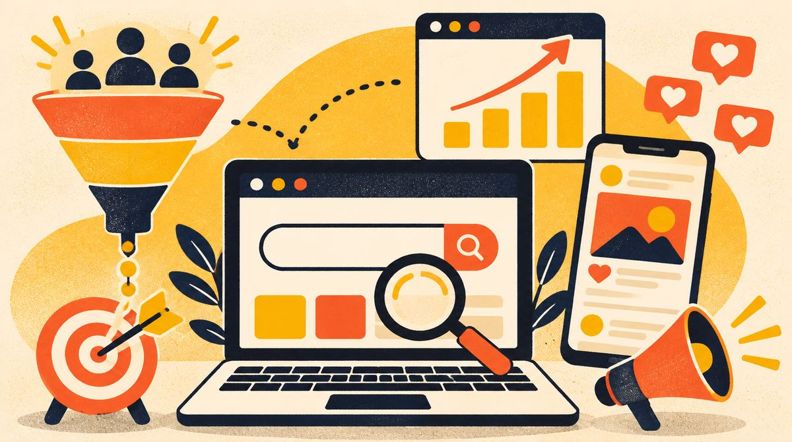

Social paid media en soles: objetivos, público y presupuesto de tu campaña

El social paid media es pagar en redes para llegar a la persona correcta en el momento correcto. Tras construir comunidad con contenido orgánico, la publicidad pagada amplía el alcance, pero solo rinde si decides bien tres cosas: el objetivo, el público y el presupuesto. Las marcas de ejemplo (Montaña Café) son ficticias, como en clase.
Orgánico frente a pagado: se usan juntos
| Dimensión | Orgánico | Pagado |
|---|---|---|
| Alcance | Bajo y lento | Rápido y del tamaño que pagues |
| A quién llega | Sobre todo a tus seguidores | A quien elijas: edad, lugar, intereses |
| Costo | Tiempo y creatividad | Presupuesto en soles por día o campaña |
| Para qué sirve | Relación y comunidad | Alcance, visitas y ventas |
| Medición | Alcance e interacción | Costo por cada resultado |
Lo ideal es pagar para amplificar los posts orgánicos que ya funcionan.
Dónde se anuncia
- Meta Ads (Administrador de anuncios): una sola campaña para Facebook e Instagram, con anuncios que pueden abrir un chat de WhatsApp.
- TikTok Ads (TikTok Ads Manager): video vertical y público joven; funciona si el anuncio parece un TikTok más.
- YouTube Ads: se compran en Google Ads, como en la semana 13.
Primera decisión del social paid media: el objetivo de campaña
Meta ofrece seis objetivos, y cada uno trabaja una etapa del embudo:
| Objetivo | Para qué | Etapa |
|---|---|---|
| Reconocimiento | Que mucha gente conozca la marca | Conocer |
| Tráfico | Llevar visitas a tu web o perfil | Considerar |
| Interacción | Más mensajes, comentarios o vistas | Considerar |
| Clientes potenciales | Conseguir datos de interesados | Comprar |
| Promoción de la app | Que descarguen o usen tu app | Comprar |
| Ventas | Compras en tu web, app o chat | Comprar |
Segunda y tercera decisión: público y presupuesto
Define a quién le muestras el anuncio. En el ejemplo de Montaña Café: Lima Metropolitana, de 25 a 40 años, con intereses en café, cafeterías y recetas, en Instagram y Facebook. Hay tres tipos de público:
- Por datos: lugar, edad, intereses y comportamientos.
- Personalizado: tus propios contactos (visitantes de la web, clientes o seguidores).
- Similar: personas parecidas a tus mejores clientes.
Luego el presupuesto y la duración en soles. Ejemplo ilustrativo: S/ 20 por día durante 14 días suman S/ 280 de inversión total. El presupuesto diario gasta lo mismo cada día y sirve para campañas de varias semanas. Consejo: empieza con poco, observa los primeros días y solo después aumenta.
Remarketing: el anuncio que te sigue
Consiste en mostrar anuncios a quienes ya visitaron tu web o perfil pero no compraron. Un cliente mira el producto, se va sin comprar, ve tu anuncio al día siguiente en su Instagram, vuelve y compra. Requiere el píxel de Meta, un código en la web que avisa quién la visitó.
Métricas del social paid media en soles
Con el ejemplo de una campaña de S/ 280 con 40 000 impresiones, 400 clics y 20 mensajes (según las métricas de anuncios de Meta):
- Alcance: personas distintas que vieron el anuncio.
- CPM: costo por cada mil impresiones, S/ 7.
- CTR: porcentaje de impresiones que terminaron en clic, 1 %.
- CPC: costo por clic, S/ 0,70.
- Costo por resultado: lo que costó cada mensaje, registro o venta, S/ 14.
Cómo planear tu campaña sin gastar un sol
El taller usa seis herramientas gratuitas: Meta Business Suite (programar posts y ver métricas), Administrador de anuncios, Biblioteca de anuncios, TikTok Ads Manager, Canva y CapCut. Los cinco pasos: 1) objetivo según la etapa del embudo; 2) público, traduciendo la buyer persona a lugar, edad e intereses; 3) presupuesto diario o total y duración; 4) pieza y copy con gancho, valor y llamado a la acción; 5) enlace a la web de la semana 12 o a WhatsApp. El Administrador solo cobra si publicas. El entregable pide cuatro posts orgánicos (uno por etapa del embudo), un anuncio por integrante y una tabla con una métrica para cada objetivo SMART.
En resumen
- Lo orgánico construye la relación y lo pagado amplía el alcance: úsalos juntos.
- Decide en orden: objetivo (seis opciones por etapa del embudo), público y presupuesto.
- Los públicos pueden ser por datos, personalizados o similares; el remarketing necesita el píxel.
- CPM, CTR, CPC y costo por resultado se calculan con divisiones simples en soles.
- La Biblioteca de Anuncios sirve para inspirarte y diferenciarte, no para copiar.
social paid media Meta Ads remarketing CPM presupuesto